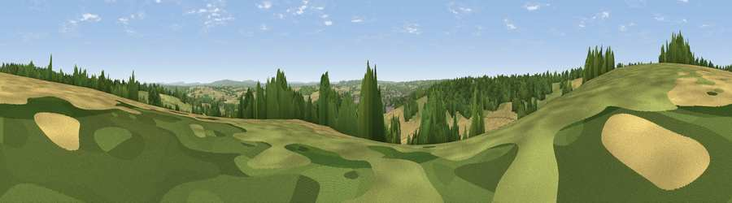

Viewpoint near Holybourne
#22063 in England · top 22% of its area beats it · near HolybourneThe view, rendered

A 360° render of this exact spot computed from the terrain model, tree cover and land cover — summer colours, afternoon light, calibrated against photographs of famous viewpoints. Real trees, hedges and buildings will differ in detail.
The panorama
Grey silhouette: terrain skyline in each direction (720 bearings, Earth curvature and refraction included). Dashed green: skyline with trees (+15 m) and buildings (+8 m) as obstacles. Blue strip: how far the ground is visible on each bearing.
Where the view opens
Wedge length = distance to the farthest visible ground on that bearing (vegetation-aware). Rings at 10, 25 and 50 km.
What fills the view
36% cropland · 33% woodland · 26% grassland · 5% built-up
Angular shares of the visible panorama (visual magnitude), not map area. Landscape diversity 0.53 (0–1 Shannon).
Key numbers
More beautiful places nearby
The staircase of upgrades: each row has a higher view potential than everything closer. Driving times are estimates from straight-line distance, calibrated against real road routing — check an actual route before setting out.
| Place | Direction | Drive | Score |
|---|---|---|---|
| Horsedown Common | NE · 7 km | ~15 min | 59.0 |
| Noar Hill | SSE · 11 km | ~21 min | 62.3 |
| Viewpoint near Steep | S · 15 km | ~27 min | 68.7 |
| Viewpoint near Buriton | S · 22 km | ~36 min | 75.3 |
| Viewpoint near Buriton | S · 22 km | ~37 min | 80.0 |
| Beacon Hill | SSE · 25 km | ~41 min | 85.8 |
| Chanctonbury Ring | SE · 51 km | ~72 min | 87.0 |
| Mottistone Down | SSW · 66 km | ~89 min | 87.2 |
51.17557, -0.96320 · source: screening · position refined by local search. Computed location — check access rights before visiting.